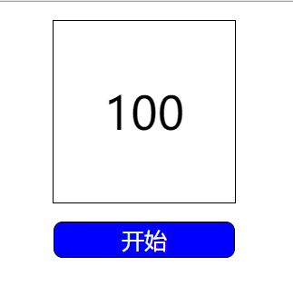

一、延时器(setTimeout)
1.延时器(setTimeout)的工作方式是：当设定一个延时器是5s后进行时，并不代表它5s后就立即执行，只是代表它5s后会被加入队列，如果5s后，队列没有其他东西，那么延时器的代码会立即执行，否则会延迟执行。
因此，关于延时器最重要的一点是：指定的时间间隔（如设置5s后执行），表示何时将延时器加入到队列，而不是何时真正执行代码。
二、定时器(setInterval)
1.定时器的一大特点是每隔一段时间(如每隔2s）就会执行，一直重复。这样有个问题：设定一个定时器a每隔2s执行一次，如果a执行的时间（executiveTime）大于时间间隔(2s)，那么，第一次执行的a还没执行完第一次，就开始执行第二次了。
js巧妙地避免了这个问题——即等到定时器的代码执行完后，再去将定时器的代码加入到队列中，所以定时器代码加入队列的最小时间间隔即指定间隔（因为理想状态是是定时器的执行时间在时间间隔内完成）。
2.使用setInterval的问题
（1）某些间隔会被跳过——如设置每个1s执行一次，如果该定时器代码执行时间大于1s，或者正好等于1s，那么，相当于代码执行时间正好等于间隔时间，那么，这个间隔时间就被执行时间占据了，所以就没有了间隔时间即没有间隔。
<!DOCTYPE html>
<html lang="zh">
<head>
<meta charset="UTF-8" />
<meta name="viewport" content="width=device-width, initial-scale=1.0" />
<meta http-equiv="X-UA-Compatible" content="ie=edge" />
<title>Document</title>
<style>
#content{display: block;width: 200px;height: 200px;border: 1px solid black;margin: 20px auto;text-align: center;line-height: 200px;font-size: 50px;}
#btn{width: 200px;height: 40px;border: 1px solid black;border-radius: 10px;margin: 20px auto;display: block;cursor: pointer;background: blue;color: #FFFFFF;font-size: 25px;}
</style>
</head>
<body>
<span id="content">
100
</span>
<input type="button" id="btn" value="开始">//定义一个功能按钮
<script>
var ocontent = document.getElementById("content");
var obtn = document.getElementById("btn");
var start = ocontent.innerHTML;
var num = ocontent.innerHTML;
var timer = null; //设置全局变量
var onoff = 1; //开关
obtn.onclick = function(){
if(onoff == 1){ //当开关等于1时，执行开始倒计时功能
clearInterval(timer); //清除计时器，避免重复点击开关时，造成bug
timer=setInterval(function(){
if(num == 1){
num = "结束了"
obtn.value="复位"
clearInterval(timer);
onoff = 2;
}else{
num--;
}
ocontent.innerHTML = num;
},100)
onoff =0; //“定义”到暂停的功能
obtn.value = "暂停" //点击按钮时，obtn.value变为暂停
}else if(onoff == 0){ //暂停功能
clearInterval(timer);
onoff = 1; //暂停之后继续倒计时
obtn.value = "继续" //obtn.value变为继续
}else if(onoff == 2){ //启动复位功能
obtn.value = "开始";
onoff = 1;
num = start;
ocontent.innerHTML = start;
}
}
</script>
</body>
</html>效果如下：
